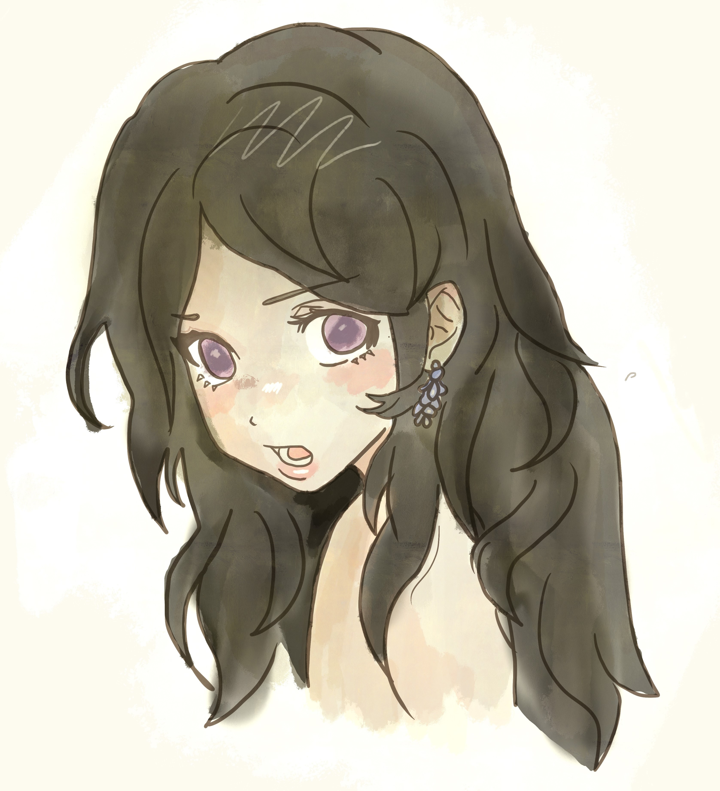

About Me
Hey everyone! Welcome to my personal website, which serves as my art portfolio. My name is Eveliina, but most people call me Eve. I only recently started my journey as a digital artist, but I’ve been passionate about art since I was a child. I've always loved drawing, painting, and creating things. I attended an art school where I learned to master all kinds of materials and artistic styles.
Before I began focusing on digital art, my go to was doodling and painting. Now that I’ve discovered digital art, I’ve become obsessed with it and can’t wait to continue improving and see myself grow in this new kind of creative light. My art style evolves often, but for now, I’d say I enjoy creating unique characters and experimenting with different styles. This means you’ll find a wide variety of drawings here, each offering a different vibe.
This website is also a personal space for me to document my progress and improvement as an artist. Hopefully, in the future, I can start selling my art, maybe as stickers or by taking commissions. But for now, I’ll continue learning and exploring the wonders of digital art.
Thank you so much for visiting my website! Be sure to check out the gallery section :)♥
